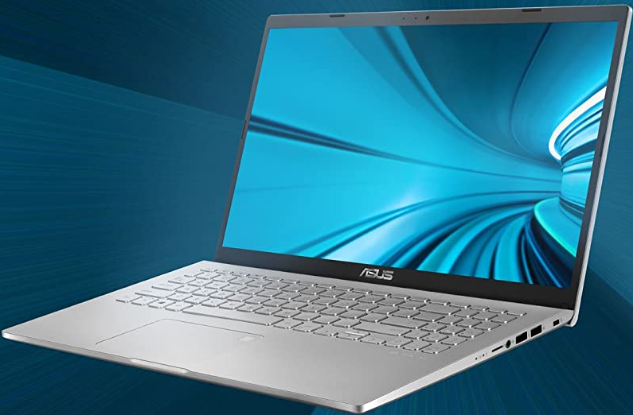
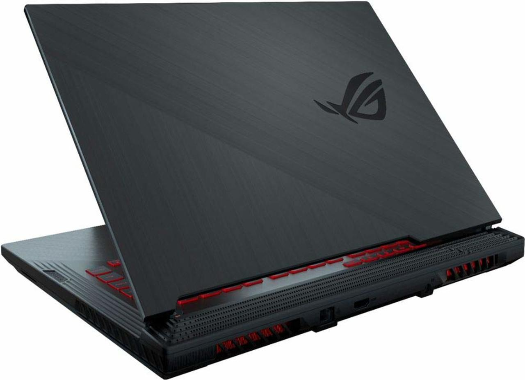

| ASUS Laptop |
X509JB Laptop With 15.6-Inch Display
يأتي لابتوب اسوس X509JB ماركة اسوس من السلسلة (Asus) X, بشاشة مقاس 15.6", ونظام تشغيل أساسي Windows 10, سعة تخزين الجهاز 1 TB HDD و 8 جيجابايت رام, أما المعالج فهو من نوع Intel Core i5-1035G1 (10th Gen), وكرت الشاشة NVIDIA GeForce MX110 (2 GB), بسعر تقريبي 680 دولار أمريكي.
|
2ASUS VivoBook S14 S433FL-EB080T
تقدمه اليكم شركة اسوس التايوانية بشاشة 14 بوصة في سلسلة فيفو بوك المخصصة للأعمال بجودة تصنيع مميزة مع معالج من الجيل العاشر Core i7-10510U رباعي النواه بسرعات تصل الي 4.90 جيجا هيرتز بجانب الكرت المدمج من شركة انتل ، مع كرت رسوميات منفصل يصل الي NVIDIA® GeForce® MX250بسعة 2 جيجا بايت GDDR5 ، وذاكرة وصول عشوائية تصل الي 8 جيجا بايت من نوع DDR4 بسرعة 2400 ميجا هرتز ، وشاشة عرض تصل الي 14.0 بوصة FHD IPS بدقة 1920 × 1080 بكسل LED backlit مضادة للوهج 60 هيرتز ، اما التخزين يأتي بهارد ديسك من نوع SDD فائق السرعة بسعة تصل الي 512 جيجا بايت PCIe Gen3 x2 SSD ، وبطارية تصل الي 3 خلايا 50 واط بمدة تشغيل تصل الي 3 ساعات مع دعم تقنية الشحن السريع ، مع دعم شبكات الواي فاي الاصدار السادس فائقة السرعه مع دعم اصدار تقنية البلوتوث 5.0 ، مع دعم العديد من منافذ USB 3 سريعة بسرعة نقل تصل الي 5 جيجا بايت في الثانية، ويعمل اللاب توب بأحدث انظمة مايكروسوفت Windows 10 واليكم الأن كافتة مواصفات لاب توب اسوس فيفو بوك
|
 |
|
| ASUS GAMES |
ASUS TUF Gaming A15
سعر ومواصفات لاب توب ASUS TUF Gaming A15 تقدمه اليكم شركة اسوس التايوانية في سلسلة تي يو اف جيمنج المخصصة للاعبين المحترفين بمعالجات فائقة السرعة من سلسلة Ryzen 4000 من شركة AMD ، ويأتي هذا الجهاز بمعالجات Ryzen السريعة وذات السعر المنخفضة مقارنتا بالمعالجات الاخري المنافسة , حيث يأتي معالجات AMD ذو سرعة فائقة بالاصدارت التالية Ryzen 4900H ثماني النواه و Ryzen 7 4800H ثماني النواه و Ryzen 5 4600H سداسي النواه بجانب كرت الرسوميات المدمج من شركة AMD ، مع كرت رسوميات منفصل يصل الي NVIDIA® GeForce RTX™ 2060 بسعة 6 GB جيجا بايت GDDR6 ، ليكون جهازك بعد كل هذه الاختيارات القوية من كروت الشاشة قادر علي تشتغيل كافة الالعاب بجودة جيدة ، وذاكرة عشوائية تصل الي 32 جيجا بايت من نوع DDR4 بسرعة 3200 ميجا هرتز ، و بشاشه عرض تصل الي 15.6 بوصة FHD IPS بدقة 1920 × 1080 بكسل LED backlit مضادة للوهج 250 هيرتز مع معدل التحديث 144 هرتز ، اما التخزين يأتي بهارد بسعة 1 تيرا بايت و هارد تخزين ثاني من نوع SDD فائق السرعة بسعة تصل الي 1 تيرا بابت M.2 NVMe™ PCIe® 3.0 SSD ، وببطارية ليثيوم ايون 4 خلايا 90 واط مع دعم تقنية الشحن السريع مع مدة تشغيل تزيد عن ثلاثة ساعات من التشغيل المتوصل ، ويعمل اللاب توب بأحدث انظمة مايكروسوفت Windows10 واليكم الان كافة تفاصيل مواصفات الإصدارات المختلفة من اللاب توب .
|
Asus ROG Strix G G531GT
سعر ومواصفات لاب توب Asus ROG Strix G G531GT تقدمه اليكم شركة اسوس التايوانية في سلسلة روج ستريكس جي الموجهة الي اللاعبين و صناع المحتوي بفضل معالجات الجيل التاسع فائق السرعة من شركة انتل ، حيث يأتي الجهاز بمعالج Core i7-9750H سداسي النواه بسرعات تصل الي 4.50 جيجا هيرتز بجانب كرت رسوميات مدمج من شركة انتل ، مع كرت رسوميات فائق NVIDIA GeForce GTX 1650 بسعة 4 جيجا بايت رام GDDR5 ، وذاكرة وصول عشوائية تصل الي 16 جيجا بايت من نوع DDR4 بسرعة 2666 ميجا هرتز ، وشاشة عرض تصل الي 15.6 بوصة FHD IPS بدقة 1920 × 1080 بكسل LED backlit مضادة للوهج مع معدل التحديث 60 هرتز ، اما التخزين يأتي بهارد ديسك من نوع SDD فائق السرعة بسعة تصل الي 512 جيجا بايت M.2 NVMe PCIe 3.0 SSD ، وبطارية تصل الي 4 خلايا 66 واط بمدة تشغيل تزيد عن ثلاث ساعات ، مع دعم شبكات الواي فاي الاصدار السادس فائقة السرعه مع دعم اصدار تقنية البلوتوث 5.0 ، مع دعم العديد من منافذ USB 3 سريعة بسرعة نقل تصل الي 5 جيجا بايت في الثانية، ويعمل اللاب توب بأحدث انظمة مايكروسوفت Windows 10 واليكم الأن كافة تفاصيل مواصفات اللاب توب
|
 |
| Asus ZenBook |
ASUS ZenBook Duo UX481FL-BM039T
تقدمه اليكم شركة اسوس التايوانية ضمن سلسلةزين بوك ديو الذي يعد افضل لاب توب بشاشتين في العالم حتي الان في عام 2020 ، حيث يأتي بمعالج Core™ i7-10510U من الجيل العاشر بأنوية رباعية بسرعات تصل الي 4.90 جيجا هيرتز من سلسلة الجيل العاشر من شركة انتل ، مع كرت رسوميات منفصل يصل الي NVIDIA GeForce MX250 بسعة 2 جيجا بايت GDDR5 بالأضافة الي كرت شاشة مدمج يصل الي Intel Iris Plus Graphics ، وذاكرة وصول عشوائية بسعة تصل الي 16 جيجا بايت LPDDR3 بسرعة 2133 ميجا هرتز ، وبشاشتين عرض الأولي 14.0 بوصة تعمل بالمس LED-Backlit بدقة 1920 × 1080 بكسل FHD مع زوايا عرض واسعة 178 دراجة بمعدل اناره 300 شمعه مع تدرج لوني بنسبة 100% حافة الشاشة رفيعة 3.5 ملم مع نسبة عرض إلى جسم بنسبة 90٪ و شاشة ثانية 12.6 بوصة تدعم اللمس بزويا عرض واسعة 178 درجة مع دعم قلم مخصص للكتابة و الرسم ، اما التخزين يأتي بهارد فائق السرعة SSD بسعة تصل الي 1 تيرا بايت 1 تيرا بايت PCIe x4، مع دعم شبكات اتصال جديدة Wi-Fi 6 المدعومة من انتل بسرعات نقل تصل الي 2.4 جيجا بايت في الثانية عند استخدامها مع نقطة وصول متوافقة ، وبطارية ليثيوم بوليمر 4 خلايا 70 واط في الساعة تدوم حتي 4 ساعات من التشغيل المتوصل ، ويعمل اللاب توب بأحدث انظمة مايكروسوفت Windows 10 واليكم المواصفات الكاملة للاب توب زين بوك ديو
|
ASUS VivoBook Flip 14-TP401MA-BZ215T
تقدمه اليكم شركة اسوس التايوانية في سلسلة فيفو بوك فليب المتحول 2 في 1 بمواصفات تناسب الاعمال البسيطة مثل تصفح الانترنت والمهام البسيطة ، حيث يتميز هذا الجهاز بتصميم نحيف ووزن خفيف مع امكانيات تحول الجهاز من لاب توب اللي جهاز لوحي كل هذا في جهاز واحد فقط ، ويأتي بمعالج Celeron N4020 ثنائي الانوية بسرعة تصل الي 2.8 جيجاهيرتز بجانب كرت رسوميات مدمج من شركة انتل ، وذاكرة وصول عشوائية تصل الي 4 جيجا بايت من نوع DDR4 بسرعة 2400 ميجا هرتز ، وشاشة عرض تصل الي 14.0 بوصة HD بدقة 1366 × 768 بكسل LED backlit لامعه تعمل باللمس ، اما التخزين يأتي بهارد ديسك من نوع SDD فائق السرعة بسعة تصل الي 128 جيجا بايتSSD ، وبطارية تصل الي ليثيوم بوليمر 2 خلايا 39 واط بمدة تشغيل تصل الي 3 ساعات ، مع دعم العديد من منافذ USB 3 سريعة بسرعة نقل تصل الي 5 جيجا بايت في الثانية، ويعمل اللاب توب بأحدث انظمة مايكروسوفت Windows 10 واليكم الأن كافة تفاصيل مواصفات لاب توب اسوس فيفو بوك فليب .
|
|